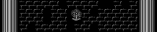

THE CHAMBER · BLACK PAPER 00
The Chamber

- Tokens
- 64
- Contracts
- 16
- The program
- 46,877 B
- Written in
- 42 B
- One render
- 409 KB · ~61M gas
- On chain
- 8 Sep 2026
Eight characters, one mechanic each, in a room the chain redraws every time you look.
The Chamber is the Genesis collection of the Chamber series: sixty-four ERC-721 tokens over one frozen Commodore 64 program, deployed to Ethereum mainnet on 8 September 2026 and locked. Each token is a room with a character in it. The program is the same for all sixty-four. What differs is who stands in the room, and what the room looks like when you open it.
It began as a question about two machines. In 2022 nopsta stored a working Commodore 64 — the emulator minimal64 — inside Ethereum contracts, and built ORAAND on it: 1,024 generative artworks, each a real C64 program, running from chain in a browser and on 1982 hardware. He had already shown that the machine could boot from Ethereum and run. Besides this series, the only other person we know of who has built on that machine is hashrunner.
The question The Chamber asked was a narrower one. Could the chain reach inside the running program — not boot it and step back, but stay in the loop, so that what the machine draws depends on the state of the chain at the moment you look at it?
The Chamber is that experiment, and it is deliberately the simplest version of it: behaviour that a person wrote, running on a machine that boots from chain state, in a room the chain redraws at every read.
A room that is never the same twice
Nothing about a Chamber token is stored per render, and nothing is fetched. When someone calls tokenURI(id), the contract takes the previous block's hash, mixes it with the token id, and stamps the result into the running program's parameter block before the machine boots.
So the room is drawn from the chain, every time, and it is never quite the same twice: the pattern of the back wall, where the bats fly, where the candle stands.
And yet the token's traits never change. Three bytes of that seed are forced to values fixed in the contract at deployment — the token's wall, its bats, its candle. A token that says dense wall, two bats, lit shows a dense wall with two bats and a lit candle, on any block, for ever. Only the arrangement moves.
The room is never the same twice, and the metadata never lies.
That distinction is the whole trick, and it is the reason the block can be allowed anywhere near the artwork at all.
The number in the floor
Which block, though? The render says so itself. Eight digits are carved into the right end of the floor: the number of the block whose hash arranged the bricks, the bats and the candle. The wall is what that hash looked like. The floor says which hash it was.
That is not decoration, because the render cannot be checked afterwards. A contract can only reach the last 256 block hashes, so a wall seen at block N cannot be recomputed on chain an hour later. The renders are impressions, not a series — each one is a photograph of the chain at one moment, and the number in the floor is the only record of which moment it was.
And the photograph is portable. prg(id) is a public view that hands back the program with its forty-two-byte parameter block written in: thirty-two bytes of seed, eight digits of block number, one byte of behaviour, one of colour. That is a file. Save it, load it on a real Commodore 64 — the actual machine, not the emulator — and the same room comes up with the same number in the floor. The block you pulled it at travels in the bytes, off the chain and onto 1982 hardware.
The contract says as much itself, in the description every marketplace shows:
Rendered from block N, whose last eight digits are carved in the floor. The program can be pulled out with prg(N) and run on real hardware; the copy you take is stamped with the block you took it at.
We have run it on an emulator that is not ours: lvllvl.com, nopsta's own browser Commodore 64, a fuller machine than the one he stored on the chain, with a BASIC and a KERNAL in place. Token 55's program, pulled from mainnet at block 26,027,224, booted there and put 26027224 in the floor. We have not yet run it on a physical machine. We expect it to work — the program asks the ROM for nothing, banks both ROMs out as it starts and installs its own interrupt handler — and expect is the word until it is done.
Eight behaviours, not one
Sixty-four tokens run one program, but they do not all do the same thing. Eight authored behaviour systems are distributed across the collection as a ladder rather than a matrix:
the Shadow 12 the Echo 8 the Dancer 3
the Wanderer 12 the Mirror 8 the Glitch 1
the Sleeper 12 the Shy 8Colour is bound to the character, not rolled separately, so a Dancer is always cyan. The Glitch is the only one that cycles.
Two rules were applied to the table by hand, and they are the kind of thing that only matters if you care: the darkest ordinary room — dense wall, no bats, dim — exists exactly once in the collection, and it belongs to a Dancer. No two Dancers share a wall. A token without a candle is a dim room for life.
The Glitch is one of one: a blackout wall, no bats, no candle, a colour that will not settle, and it is the only character that plays the intro tune.

The Shadow12 of 64Tony's blue double keeps his distance, faces you, and jumps and crouches when you do.
The Wanderer12 of 64Tony's green double lives here and ignores you: he strolls, pauses, sits and jumps now and then, on dice seeded from the block.
The Sleeper12 of 64Tony's purple double dozes crouched until you come close, follows a while, and dozes off again.
The Echo8 of 64Tony's yellow double replays you exactly, four seconds behind: every step, jump and duck.
The Mirror8 of 64Tony's light blue double is your reflection about the room's centre line: he crouches while you jump and bounces while you crouch.
The Shy8 of 64Tony's light red double runs when you come close, cowers at the pillar, bolts past you when you are almost on him, and creeps back when you leave.
The Dancer3 of 64Tony's cyan double dances to the tune: he steps with the bass line and bounces on the hits, read from the sound chip.
The Glitch1 of 64Tony's double will not hold still: he wears one of the seven characters at a time and teleports into the next, cycles their colours, and blinks and jitters in bursts.Every image here is the bytes the contract returns from svg(behaviour) — not a screenshot of it. Each card opens a token of that character. All sixty-four · the contract.
The dice came off the sound chip
This is the part worth telling, because it is where the claim the collection makes turned out to cost something.
The Commodore 64 has no random number generator, but it has a standard substitute that nearly every game uses. Register $D41B is read-only and returns the top eight bits of the SID's voice three oscillator. Read it and you get a byte that depends on whatever voice three is doing.
The usual arrangement pays for that with a voice: set voice three to noise, silence it with bit 7 of $D418, and write the music for the other two. Tony never paid it. Sami Juntunen's soundtrack plays on all three voices, and the dice were taken on top of the music — the Wanderer and the Glitch shared a shift register that advanced on its own and was then XORed each frame with whatever $D41B happened to return.
So voice three was doing three jobs at once. Playing the tune. Driving the Dancer, who reads the envelope at $D41C and steps when it rises. And stirring the dice at $D41B.
Nothing about that sounds wrong, and nothing about it plays wrong. The first two jobs are exactly right and were never in question. The third is the one that broke the collection's claim, in a way no player would ever notice: dice stirred by a musical waveform are correlated with the tune, and they cannot be recomputed from the seed. To re-derive a Wanderer's path you would need to know where the music was at every frame — when playback started, which frames were skipped, the chip's exact state. A stranger holding the same program and the same seed has none of that.
That is fine for a game. It is fatal for a piece whose whole claim is that anyone can check the render.
So the dice came off the sound chip. $D41B is now read nowhere in the program. The shift register is seeded instead from four bytes of the seed the contract stamps in — bytes 3, 15, 20 and 28, which the contract deliberately leaves untouched when it forces the trait bytes — and advances once a frame with nothing stirred in.
Those four bytes come from the block hash.
The dice moved so that a stranger could check the room.
That was not the plan at the start. It is the answer the two machines arrived at, and it is a better one than the plan.
And nothing was given up. The Dancer still listens, on the same voice. The contract says so itself, in characterSentence(1):
Tony's cyan double dances to the tune: he steps with the bass line and bounces on the hits, read from the sound chip.
Two different uses of one chip, told apart only once it became clear they were different things. What needed to be unpredictable went to the block, where unpredictability is the whole point of a hash. What needed to hear the tune went on hearing it — and the rarest ordinary character in the collection is the one still wired to the sound.
The machine stays open
A Chamber token is a real Commodore 64, not a rendering of one. Hold the right place on the page and a door opens: the machine will take a .prg from your own disk and run it. Drag and drop works too. Neither is advertised on the page, because the artwork is the room, not the loader — but the machine underneath was never closed.
That capability is inherited rather than invented. READY 64, released two days after the proof-of-concept token, on 30 August 2026, is a Commodore 64 assembled entirely from Ethereum with the keyboard handed to you — 0x0444C081…fF53. The Chamber keeps the door and shuts the front of it.
It is also the boundary between the first collection and the second: the Perception Chamber's page carries no loader at all, on purpose. That mechanic is the Chamber's and stays here.
Authored, not learned
There is no learner in The Chamber. Nothing is trained, nothing adapts, nothing remembers a viewer. The Shadow does what a person wrote the Shadow to do, and will do it identically in a hundred years.
That is not a limitation the collection is apologising for. It is the baseline the series is measured against. The Chamber establishes what an authored behaviour system on this stack looks like when it is done carefully: deterministic, inspectable, complete, and finished the day it was locked.
The Perception Chamber is the departure. Same machine, same discipline, but its Tony has a mind that a person teaches and the chain replays, and its weights change. Reading the two together, the question the series is actually asking becomes visible — what is the difference between behaviour that was written and behaviour that was learned, when both are running on the same frozen machine?
The Chamber is the before.
What is on chain
The program lives in data contracts and is reassembled at render, its hash asserted at deployment. The eight images are stored the same way, each refusing to deploy unless its bytes match a recorded size and hash. The sixty-four-row table is a constant in the contract, so the collection is the same collection row for row wherever it is deployed. The emulator is nopsta's, read in place from his 2022 contracts.
Every token was minted in the constructor and the collection is locked: no owner, no minter, no setter, no upgrade, no path by which any of it can be repointed or taken down.
0x75FD5A9c4440c38561A0099B216F825b7C6db924 — mainnet, 8 September 2026.
Credits and licences
Tony: Born for Adventure — game code Maciej Małecki, graphics Rafał Dudek, music Sami Juntunen. MIT. https://github.com/maciejmalecki/tony-demo
minimal64 — the C64 emulator, by nopsta. GPL-2.0. https://github.com/nopsta/minimal64
Character set — the OpenROMs character ROM, LGPL-3.0-or-later. https://github.com/MEGA65/open-roms
None of this would exist without nopsta, who stored the machine on Ethereum in 2022 and has since passed away. The Chamber series was created independently afterward, as an exploration of—and tribute to—the open computational infrastructure he left for others to use.
The Chamber series, its contracts and its pages are by CypherDAO, 2026, under the MIT licence.